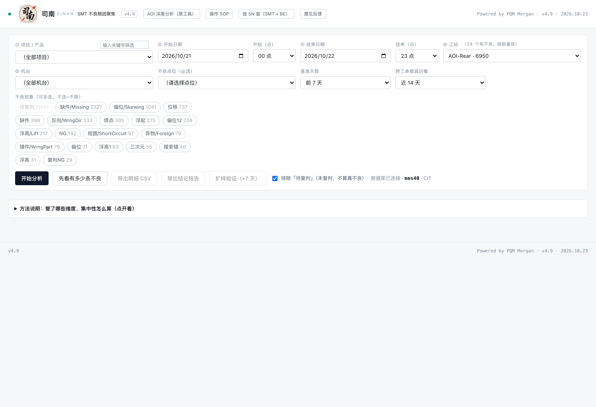
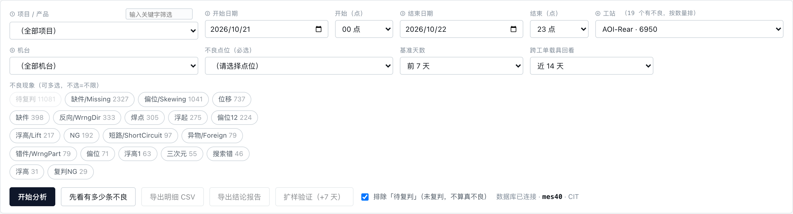
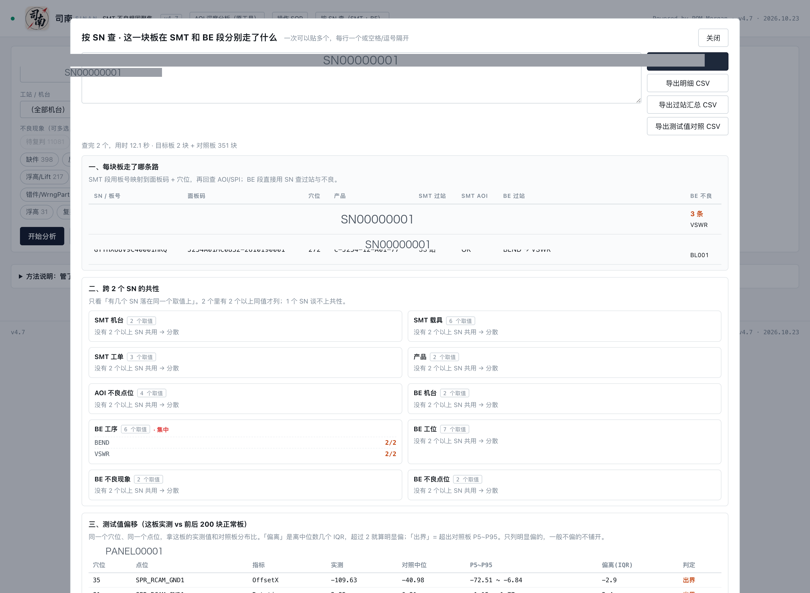
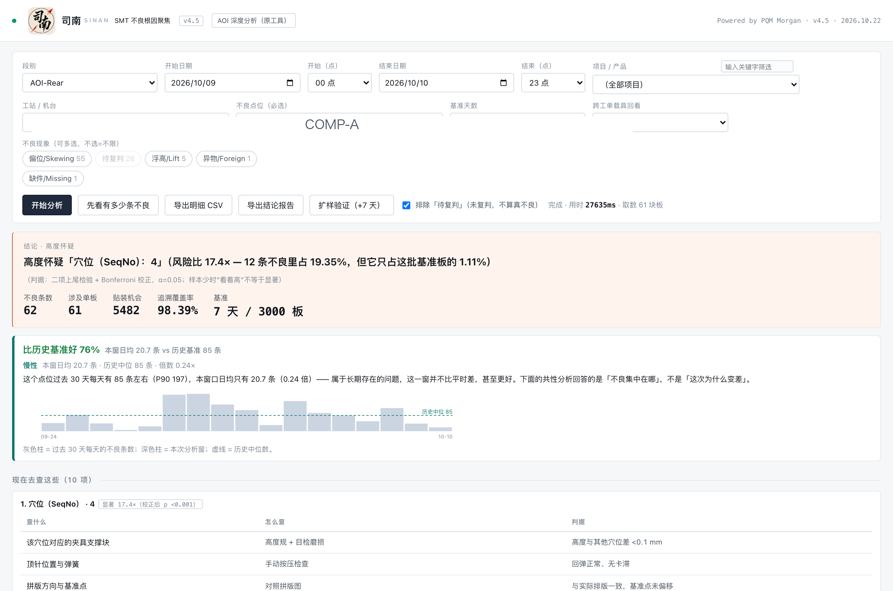
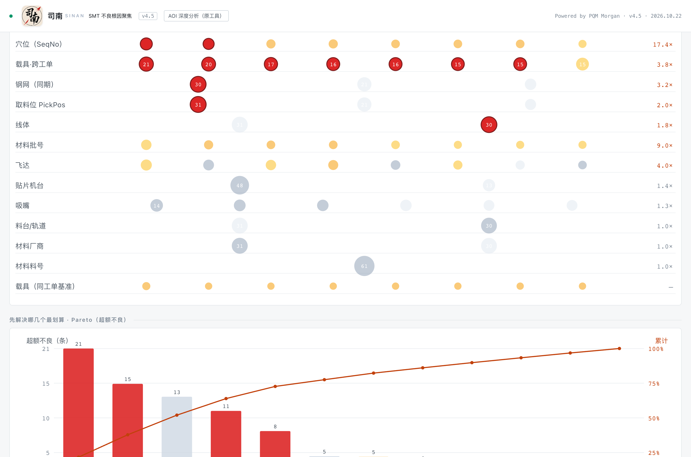
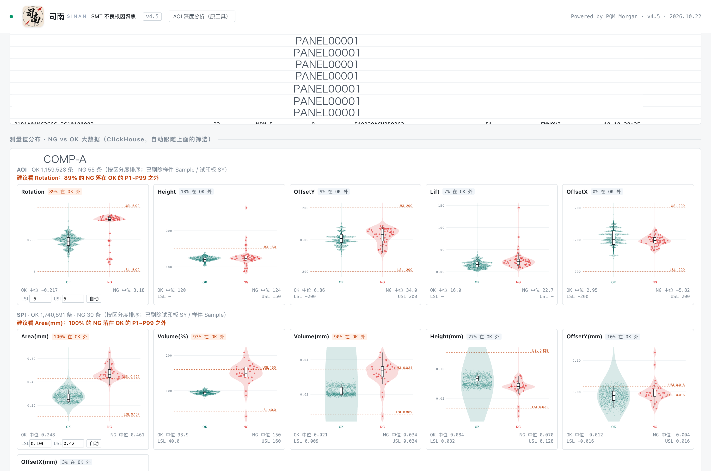
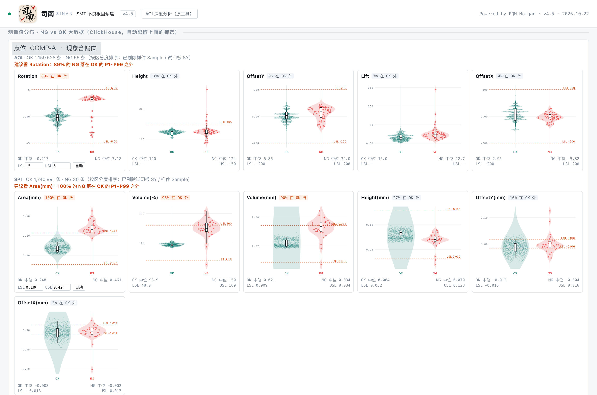
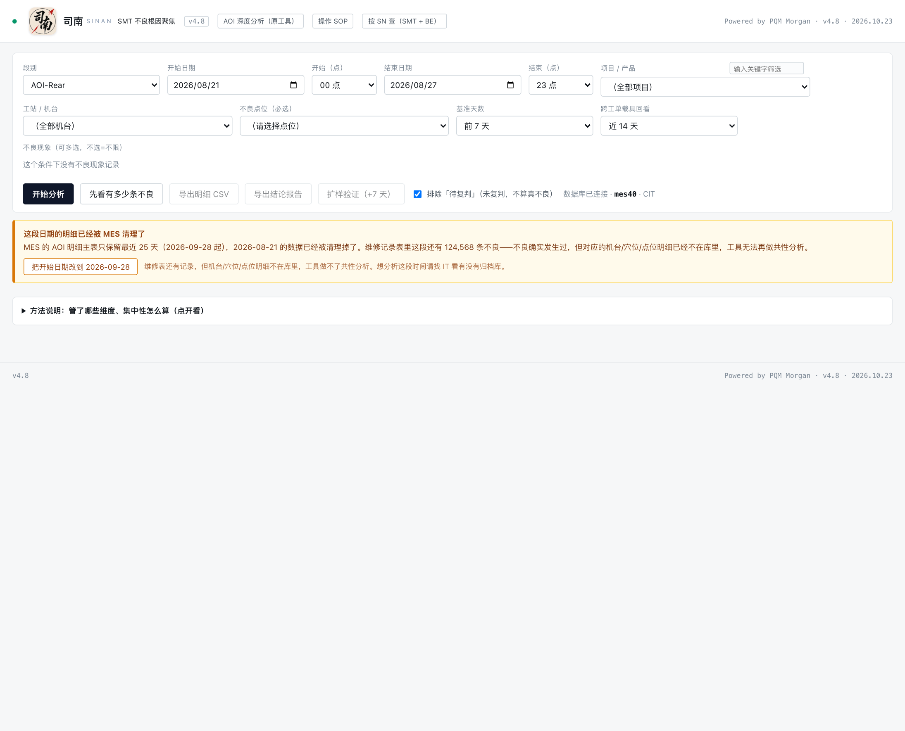
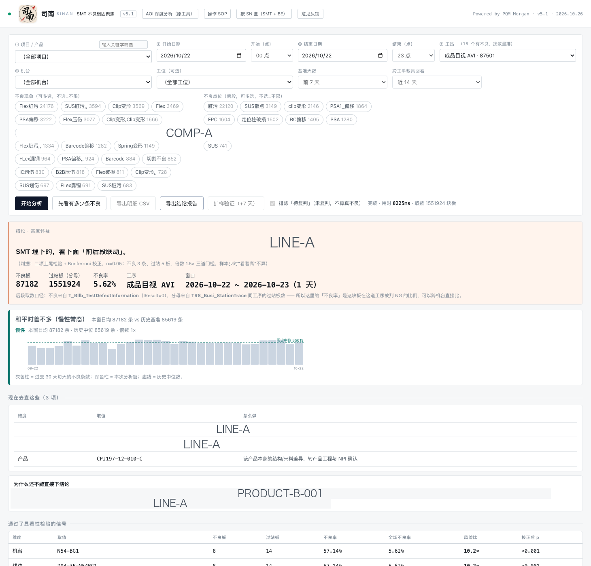

司南 SINAN · 操作 SOP
SMT 不良根因聚焦 · v6.0 · 2026.10.26 · Powered by PQM Morgan
一句话：输入「哪个段别、哪天、哪个点位、什么不良」，工具自动从 MES 拉机台/吸嘴/飞达/载具/钢网/材料，
和同批正常板做对照，告诉你这批不良有没有共性、指向哪里，并给出下一步要查什么。
v6.7 干三件事
① 不良上限 300 → 1000。原来卡 300 不是因为统计，是贴装明细分批太粗（800 块一批、串行 await），
实测 795 块板 77 秒。改成 30 块一批 × 6 批并发后 3.4 秒（快 22 倍）。
实测 1000 条不良 → 795 块板 / 50,790 次贴装 → 端到端约 21 秒。
口径未变：超 1000 时仍按 ID 的 MD5 稳定哈希抽 1000 条，页面与报告写明「总体 / 分析 / 占比」。
② 「工作台粘贴识别」默认折叠。收成一行标题，点开才展开，折叠状态记进 localStorage；
从工作台点「查共性」跳进来（网址带参数）时自动展开。
③ 修三处坑：版本号各说各话（页面静态 v6.7 / 服务端 v6.6 → 已统一）；
mapSide 匹配顺序把 AVI-EB 吃成 AVI（改成规则表按长 key 先比，补 PRESSURE）；
★ 真 bug：windowPanelsQuery 参数嗅探导致同一条 SQL 有时 158 秒、有时 0.6 秒，
钉死 OPTION (MAXDOP 4, RECOMPILE) 后同一案例 168 秒 → 15 秒。
新增 tests/v2_v67_test.js（22 项）。
v6.6 只动「按 SN 追溯」，把它拆成两条路
一、新增「追溯范围」下拉：SMT + BE 联合追溯 / 仅 BE 段。慢的根因实测确认：后段 100 个 SN 只要 149 ms（过站 42 ms + 不良 140 ms），慢的是前段取对照 pcs（单 SN 3~25 秒，5 个 SN 曾 45.8 秒）。所以拆开 —— 要看前后段联动就得付这个代价；只想看后段有没有共性，不必查前段。选「仅 BE 段」时对照 pcs 下拉置灰、四个 SMT 侧导出按钮置灰并写明原因，只留「导出 BE 段 CSV」；切模式会清掉上一次另一模式的结果。
二、仅 BE 段五章结论：①结论（撞在同一台机 / holder / 穴位 / 轨道就红框，先查该位置治具探针压头；没撞就青框，明说往下看前段 SMT）②每块板的后段路径 ③后段不良明细（0 条时说明「不是查询失败」）④同工序同期基准（占比 1/5,113,326 显示 <0.01% 不显示 0%）⑤测试值说明（如实写 BE 只有 pass/fail）。防呆：贴 3 个 SN 只有 1 个查到记录时，不说「散在不同机台上」，而是明说「判不了共性，只有 1 块有记录」——样本不够 ≠ 查过了没问题。
三、联合追溯也快了一倍多（5 SN 45.8 s → 5~8 s）：①邻居查询加 Ext10='AOI-Rear'/'AOI-Front' 走三列复合索引（3.6 s → 1.6 s）②前后方向与 pcs 两段全部并行 ③同「产品|机台」组共享一次邻居搜索（100 个真实 SN 只落 16 组）④窗口逐级放大加短路，兜底慢查询只在一条都没查到时才发。ClickHouse 侧 SPI 逐板串行（独占 10.6 s）改并发 4，扫描窗日期余量 3 天 → 6 小时（目标板 AOI 2.3 s → 1.3 s）。
四、beDenom 定稿：COUNT(DISTINCT PanelCode) 是元凶（实测 2,560 ms → 137,307 ms），改成逐天 GROUP BY Process + COUNT(*)，只取最近 3 天，预算 9 s。100 个 SN 基准 2.2 s（改前 154 s 超时）。
五、新增 58 项回归测试 tests/v2_beonly_test.js：守住「仅 BE 段不许出现 neighbors/chAoi/chSpi」「后段基准不许写 DISTINCT」「这批走过 ≠ 全厂同期」「取不到基准给 null 不给 0」等易被改回去的口径。
v6.5 只动「按 SN 追溯」这一条路（四件事）
一、SN 追溯也有进度浮层了：以前只有一行小字在转秒数。现在跟 SMT / BE 共用同一层浮层（司南图标 + 百分比 + 进度条 + 人话字幕），六步顺序是「解析 SN / 拉 SMT 过站 / 拉 BE 过站与不良 / 取对照 pcs / ClickHouse 测量值 / 出结论」。百分比到 92% 停住等真实结果，不会没算完就说 100%。
二、对照板从「按 panel」改成「按 pcs」，30 / 100 / 300 三档：一块 panel 是一整块拼板（平均 102 个产品、最多 360 个），「前后各 200 块 panel」等于两万个产品。现在按单个产品（pcs）取，实测 30 档落在 1 块 panel、100 档 1~2 块、300 档 3 块。基准只用你选中的那些 pcs，不会把同板未选中的混进分母。
三、新加「导出全链路 CSV（过站+测试值）」：24 列一行一个事件（SN / 角色 / 是否目标板 / pcs条码 / 板号 / 穴位 / 段别 / 工序 / 工站 / 机台 / 线体 / 载具治具 / 钢网 / 工单 / 产品 / 结果 / 不良现象 / 指标 / 实测值 / 规格下限 / 规格上限 / 是否超规 / 邻居中位数 / 检验时间）。相同 SN 实测从 67,323 行降到 1,141 行。
四、修了四个真 bug：①导出明细 AOI 行少一列（18 列表头 17 个值，测量值整体右移）②SPI 测量值全丢（存的是板号基码不是 pcs 条码）③空字符串测量值被写成 0（Number('')===0）④测试值对照在 pcs 口径下空表（基准键 loc|modid 对不上，改用 loc）。
后段 BE 的实测曲线仍取不到（在文件共享 txt 里，本机访问被拒），所以 BE 只给 pass/fail + 工位 + 工装，全链路表里会写明。
v6.4 加了四件事
一、前段 SMT 也有「时间段不良分布」了，并且会判「有没有突然上升」
以前只有后段 BE 有这个图。现在两段一致：上面是按天的柱、下面 24 根按小时的柱，最上面一句判定。
判定口径：把按天条数切成前 1/3 与后 1/3 比平均值 —— 后段 ≥ 前段 2 倍算「在上升」，1.3~2 倍算「略有抬头」，更低算「平」或「在下降」；单天 ≥ 窗口内中位 3 倍会单独标成「孤立尖峰」（红柱），而且明确说明它不等于整体在上升；样本不足（不到 8 条或不足 4 天）直接写「看不出来」。
为什么不用回归斜率：不良条数是离散计数、常有 0 值，一个尖峰就能把斜率带偏，让工具说出「整体在恶化」这种假话。三段均值抗噪，也贴近一线看板的习惯。
顺带修了一个藏了很久的真 bug：MES 返回的 CreateTime 是 Date 对象，以前用 String(...).slice(0,10) 取日期得到的是 "Mon Oct 19"，跟 "2026-10-19" 对不上，导致「这波是慢性还是突发」那张图里「本次分析窗」的深色柱一根都画不出来。现在统一走 mesDayOf()，实测窗口 4 天全部正确命中（修复前 0 天）。
二、等待浮层加了司南图标
点「开始分析」会弹一层：左上角司南图标缓缓转 + 大号百分比 + 进度条 + 现在在干什么的人话字幕（取数 / 定位不良 / 算暴露量 / 显著性检验 / 分离被动共现 / 出结论）+ 一句解释。百分比到 92% 停住等真实结果，不会在没算完时显示 100%。
三、发行包里已经配好账号密码
包里的 config/ 文件夹装好了公司内网只读账号，同事双击「启动工具」直接能查，不用再填。想换自己的账号：在 ~/.config/sinan/ 建 mes.local.json / be.local.json 就会盖掉包里的。同时把「给MES的说明_资源使用与申请.txt」和「搭建逻辑与协作指南.html」从发行包里拿掉了 —— 那两份是内部对接用的，同事日常用不上。
四、另出一份 3 页工具介绍（司南能帮你做什么.html），末页留了联系方式，适合转给别人时一起发。
v6.3 加了两件事：被动共现分离 + 等待动画
一、被动共现分离（重点）
你说的情况：载具 90 号穴位有异物 → 穴位维度集中，同批材料也集中，贴 90 号穴位的吸嘴 / 轨道同样显得集中，
但吸嘴和轨道本身没问题，是被载具拖出来的。工具现在能把这层分开。
做法：先取出已经上榜的显著项，对每一项把别的项整条剔掉再重算倍数（基准率也按剔完剩下的重算）：
· 剔完还 ≥1.5× → 它自己有独立问题；
· 剔完掉到 1.5× 以下，且有 ≥50% 的不良同时落在对方身上，而对方剔完仍然高 → 判「被动共现」（标红），
写明是被谁拖出来的、重叠多少；
· 两项不良板几乎完全重叠、倍数又在 3 倍以内 → 判「同簇」，说明是同一条线索的不同视角，要一起查，
不再硬拆成「根因 + 被动」。倍数差超过 3 倍不许并簇（否则 233× 的穴位会和 1.9× 的机台被说成同一件事）。
实测（产品 PRODUCT-A-005 / 点位 C0201 / 10-19~26）：12 个显著信号里 3 项判被动、3 组同簇。
穴位 139 是 233.8×，三个材料批号 3.6× / 3.4× / 3.6×，剔掉穴位 139 后一条不良都不剩（重叠 100% / 100% / 96%）；
而飞达 FEEDER0003 整体 6.0×、剔完还剩 7.4× → 判它自己有独立问题，两条都要查。
结论一句话落在卡片顶部：「最该动手的是穴位 139，把它剔掉，另外 3 项就不集中了」。
边界：这一步只回答「A 的集中能不能被 B 解释」，不是因果证明。谁先坏要靠换件复测确认——
换掉被怀疑的载具 / 穴位 / 吸嘴，用同一窗口再跑一次，信号消失才算坐实。
后段 BE 不做这一层（有意为之）：后段的机台 / holder / 穴位 / 轨道全从同一个 ResCode 解析出来，
天生互相嵌套（机台决定 holder、holder 决定穴位），强行剔除必然得出假的「被动」。后段继续用首因率判读。
二、等待动画
点「开始分析」立刻弹居中卡片：大号百分比 + 进度条 + 「AI 分析中」字幕（取数 / 定位不良 / 算暴露量 /
显著性检验 / 分离被动共现 / 出结论）+ 一句当前在算什么的人话提示。
百分比按真实耗时推进，到 92% 停住等真实完成（不假装 100%）；算完让 100% 停 0.4 秒再收，避免闪一下像没跑过。
v6.2 只加了一层判读：后段「首因 / 传导」
以前后段只看「谁不良多」，你可以拿着「AVI 的 LINE-C 高 3.5 倍」去查那台测试机；
但工序有先后，前段做的坏可能在后面每一站都被判 NG。现在每一项会多给一个首因率：
这批板里有多少是在这一站第一次被判 NG。
· 首因率 ≥90% → 判「首因」，源头在本工序，去查这一站的机台/工位；
· ≤50% → 判「疑似传导」，并且把这一项从「显著信号」降到「看着集中但不能直接当结论」表里，同时点名是哪些前站先 NG；
· 50%~90% → 「首因/传导各半」，两条都要查。
实测：后段内部传导极少（AVI 99.61%、VSWR 99.69% 都是首因），真正的传导在 SMT→BE 这条边上，
所以「前后段联动」那张表新加了传导链判读一段：SMT 侧找到的飞达 / 吸嘴 / 载具就是首因，后段属于被动共现。
导出报告同步：新增「首因判读」一章，信号表和未通过表都多了「首因率 / 判读」两列。
v6.1 相比 v6.0 改了四件事（都是数字可信度，界面基本没动）
① 日期口径统一到本地时区：不再按服务器 UTC 算，跨零点那一小时不会被算到前一天。
② 日均按实际窗口算：窗口几天就除以几天，没有数据的那天算 0 条（原来只数有数据的天，停线那段会让日均虚高）。
③ 300 条抽样改成稳定哈希：原来取最近 300 条，等于让时间越近的越容易被看到；现在同一份数据重跑永远抽同一批，页面/报告/CSV 三处都写明「哪些是全量、哪些是抽样」。
④ 多重检验改成跨维度 Holm 校正，并且不再说「可以排除」——改成「本批未发现通过门槛的显著集中，不等于已经排除」。
另外：密码从程序里拿掉了，第一次用先双击「首次配置_数据库连接」填一次（只填一次，存在自己电脑上）。
v6.0 相比 v5.2（给 MES 数据库装刹车）
① 给 MES 数据库装了刹车：功能一模一样，但不会再因为几个人同时点就把 MES 拖慢。
单人用完全感觉不到（16~30 秒照旧）；2 个人以上同时点，后面的人自动排队并告知等多久，不会报错。
另外查询窗口硬上限 31 天（选超了直接提示，不派到数据库）、并行度从 8 降到 4（实测反而更快）、
连接池收到 4 条、大表查询全部补 NOLOCK、连接名固定成 PQM-Commonality（DBA 一眼认出是我们）。
实测依据：5 人同时点，服务器并发从 20 涨到 142、单条查询 16 秒变 166 秒；8 人同时点一半请求失败。
v5.2 的两个变化（仍有效，接着看）
② 后段成品测试和 SMT 打通了：以前后段判 NG（AVI/VSWR/ICT…），你只知道它在后段哪道工序坏了，不知道在 SMT 是谁贴的，只能拿板号去「按 SN 查」一个个翻。现在后段分析完，页面下面会自动多出一张「前后段联动」表 —— 把这批后段不良板映射回前段面板码，再按 8 个维度（前段工序 / 前段工站 / 贴片机 / 载具 / 钢网 / 吸嘴 / 飞达 / 穴位）跟同一时间窗、同一道后段工序判 OK 的对照板比占比，给倍数和显著性。其中「前段工序 / 工站」就是过站集中度。★ 行是浅红底红字，一眼能挑出来。导出结论报告时这张表自动进去。
③ 后段产品下拉补上了机型名：以前只有 PRODUCT-B-001 这种码，现在后面跟机型名（PRODUCT-B-001 · LINE-A），搜索框里敲机型后缀或板号前缀都能搜到。原理是两个库产品命名不一样，工具用 MdcdatProduct 建了归一化对照表自动补名。
v4.9 的七个变化（仍有效，接着看）
① 筛选顺序改成「项目 → 日期 → 工站」，而且工站后面直接跟不良数：实际排查是先知道哪个项目出问题、再看哪几天、然后才关心哪道工站，所以把项目提到第一层。工站下拉的数字是这个窗口内的不良数（例 AOI-Rear · 6950），按数量从高到低排，没有不良的工站不出现 —— 再也不会「选完发现是空的」。每选完上一层，下一层自动收敛（选了项目，工站只剩这个项目有不良的）。
② 新增「意见反馈」按钮（右上角）：点开就是维护者的邮箱和电话（读配置，源码里不预置 PII），可一键复制；另有「复制当前条件」，会带上你此刻的版本/段别/时段/项目/机台，发过来我一眼知道是哪一次分析。
③ 导出明细 CSV 顶部多了 Input / Output：Input = 这个工站这个时段过站检验次数，Output = 判 OK 次数，另给不良数与良率；CSV 里写明了「明细一行是一个点位的一次不良，所以行数会大于 Input−Output」。
④ 后段成品测试（BE）接进来了：段别下拉第三组多了 8 道工序 —— AVI / AVI-EB / CR（弹性）/ ICT / LEAKAGE / PRESSURE / SENSITIVITY / VSWR。这一组读的是另一台服务器（<BE_HOST>），原来的前后段 AOI 还是读 <MES_HOST>，互不影响。
⑤ BE 的结论也用同一套口径：还是「不良率 ÷ 全场不良率 = 风险比」+ 二项检验 + Bonferroni 校正，泳道图和 Pareto 一样能看；但列头从「暴露」换成「过站板」，因为 BE 的分母是真实过站板数。
⑥ 「按 SN 查」升级成全链路追溯：贴一批 SN，一次拉齐四路 —— SMT 全程过站（载具/钢网/工单/机台）、SMT 的 AOI 与 SPI 实测值、BE 全程过站与不良、以及这块板前后各 200 块同产品同机台的正常板做对照。输出三块：每块板走了哪条路 / 跨 N 个 SN 的共性（13 个维度）/ 测试值偏移（这板实测 vs 正常板 P5~P95）。三个 CSV 可导出。一般 10~25 秒。
⑦ 新增「测试值偏移」：同一个穴位同一个点位，拿这板的 OffsetX / OffsetY / Rotation / Lift / Height 实测值，和那 200 块正常板的分布比。>2 个 IQR 算「偏离」，超出 P5~P95 算「出界」。这条能直接回答「是不是贴歪了」——如果全在范围内，不良更可能来自装配/来料/外观，而不是尺寸转移。
⑧ 选到「已经被 MES 清理掉」的日期时，不再给你一片空白：AOI 明细主表只保留最近约 25 天（后段）/ 36 天（前段），更早的明细已经是空的，但维修表还留着好几年记录 —— 于是会出现「维修表有十几万条不良、工具查出来却是 0」。v4.8 起日期框会钉住可选下限；万一还是选到了，筛选项下面会弹橙色告警框，写明「主表只留 N 天、这段已被清理、维修表里还有 X 条不良」，并给一个「把开始日期改到 YYYY-MM-DD」的按钮，一点就换成能查的窗口。点「先看有多少条不良」数到 0 时也会说清是「真没不良」还是「明细被清了」。
⑨ 样件板/试印板早已全部剔除：SY 前缀（SPI 试印板）、Sample 前缀（AOI 样件）、TESTCODE 机台，从不良池、基准、下拉、明细、报告、AOI/SPI 分布图全部排除。
1. 第一次使用：装运行环境（只装一次）
1
打开 https://nodejs.org/zh-cn，下载 LTS 版本。
3
装完关掉所有终端窗口（这一步很关键，否则找不到命令）。
这一步是给电脑装一个「运行环境」，跟装微信一样只做一次。装完以后就不用再管了。
如果启动器提示「没找到 Node.js」但你已经装过了：v4.5 起启动器会自动找 7 个常见位置（含 WorkBuddy 自带的 node）。
还是找不到时，把窗口里那行诊断命令的结果发给 Morgan 即可。
2. 启动
Windows
1
把整个文件夹解压到一个固定位置（例如 D:\SMT共性分析工具）。不要在压缩包里直接双击。
2
双击 启动工具.bat。会弹出一个黑色的窗口，浏览器自动打开页面。
Mac
2
双击 启动工具.command。如果提示「无法验证开发者」：右键 → 打开 → 仍要打开。
浏览器打开的是 http://127.0.0.1:8519。黑色窗口不要关——关了服务就停；要停止就关掉它。
端口被占用时工具会自动换到 8520、8521…，以黑窗口里打印的地址为准。
3. 界面分三块

打开就是这一屏：上面筛选、中间结果、下面测量值分布
| 区域 | 作用 |
|---|
| 上面：筛选区 | ① 项目 / 产品 → ② 开始日期 → ③ 结束日期 → ④ 工站 → ⑤ 机台 → 不良点位 → 不良现象 → 基准天数
工站后面跟的是这个窗口内的不良数（按数量从高到低），选完上一层下一层自动收敛；选到 BE 那一组时，这里会自动变样：时间只到天、结束日默认昨天、点位变工位、多一排后段点位 chips |
| 中间：结果区 | 结论 → 现在去查这些 → 泳道图 → Pareto → 各维度 → 跨机台 → 跨工单 → 明细 |
| 下面：测量值分布 | AOI / SPI 的 NG vs OK 五指标小图（跟着上面筛选自动生成） |
4. 五步操作
1
选条件（按顺序从上往下点）：①项目 → ②开始日期 + ③结束日期（可到小时）→ ④工站（默认 AOI-Rear，就是原来的 Post AOI；后面数字是这窗口的不良数）→ ⑤机台。
每选一层，下一层的选项就自动收敛到「真有不良」的那些，不会给你一堆空选项。
不良点位必选——不选就拉不到贴装/吸嘴数据。
2
点「先看有多少条不良」：1~2 秒出数。少于 10 条就别分析了，样本不够；超过 300 条会截断，建议先缩小范围。
3
点「开始分析」：通常 15~25 秒（要拉基准、贴装明细、跨工单载具）。
4
看结论：先看颜色 —— 红=高度怀疑、黄=中度怀疑、绿=分散（没有共性）。
5
判不出来就点「扩样验证（+7 天）」：自动把时间窗往前扩一周重算，逐项告诉你哪些转显著；到 300 条上限时会明确提示「结论偏保守」。

筛选区（v4.9 顺序）：① 项目 → ②③ 日期 → ④ 工站（带不良数、按数量排）→ ⑤ 机台。工站下拉里的站别就是 MES 真实站别
4·补 后段成品测试（BE）怎么用（v4.7 新增，v4.9 沿用）
1
段别选第三组：在下拉最下面的「后段 · 成品测试（BE，另一个库）」里挑一道工序 ——
AVI 是目视、VSWR / ICT / SENSITIVITY / LEAKAGE / PRESSURE 是电性与气密、CR 是弹性（按键手感）、AVI-EB 是电气后目视。
2
日期只选天：小时那两格会变灰，BE 按整天算。
结束日记得放昨天（工具会自动帮你挪）—— 当天的过站记录还在陆续回填，拿今天当结束日会把分母算小。
3
「不良点位」变成「工位（可选）」：选的是工位码（例 `<工序前缀>AVI0001-09`）。
下面多出一排「不良点位（后段）」chips，那是板上的实际点位（COMP-A、PSA1、7_0_FPC 这类），可多选、不选就全要。
4
点「开始分析」：一道工序一次（AVI 一天约 25~40 秒，比 SMT 段慢，因为分母是 170 万块板的过站记录）。
想看别的工序就换段别再点一次。
5
结论读法和 SMT 一样：红=高度怀疑、黄=中度怀疑、绿=分散。
差别只在列头 ——「暴露」换成「过站板」，「占比」换成「不良率」。
看到这条提醒就换天重跑：「N 个取值的『不良板数』比『过站板数』还多……这是过站记录滞后回填造成的」。
出现它说明那天的过站还没写全，工具已经把那些取值从显著榜剔掉了，但要算准得把日期往前挪一天。
工位这一维为什么不给倍数：过站表和不良表的工位码写法不完全一致（一部分产线按机台记 `<机台>AVI0013`，
一部分按工位记 `<机台>AVI0004-14`）。实测同一个工位码在两张表里对应的板号交集是 0 条，所以只给「谁出得多」。
要定机台，看「机台」那一维。
按 SN 查（顶栏那个按钮）—— 客诉反查专用
这个功能回答的是「客户退回来的这块板，到底在哪一段出了什么事」。它和上面的批量分析不同：
批量分析是「一堆不良里找共性」，按 SN 查是「指定几块板，把它这一路的记录全拉出来，再和旁边 200 块正常板比」。
2
把 SN / 板号贴进文本框，一行一个（逗号、空格、分号都能分隔）。一次最多 200 个。
后段成品码（长串 ProBar 条码）和前段面板码（PANEL… 这种）工具都认。
3
点「开始追溯」。会同时拉四路数据：SMT 全程过站、SMT 的 AOI/SPI 结果与测量值、BE 全程过站与不良、
以及这块板前后各 200 块同产品同机台的正常板做对照（贴多个 SN 时这 200 块在它们之间均分，每块板都还够用）。一般 10~25 秒（贴的 SN 越多、板越老，会慢一些）。
4
结果分三块看：
① 一、每块板走了哪条路 —— 每个 SN 一行：面板码 / 穴位 / 产品 / SMT 过了多少站 / AOI 判没判 NG / BE 走了哪几道工序 / BE 不良几条。
② 二、跨 N 个 SN 的共性（贴 ≥2 个才有）—— 13 个维度各列一遍，只有 ≥2 个 SN 落在同一取值上才列出来，并标「· 集中」。
1 个 SN 谈不上共性，这块会自动不显示。
③ 三、测试值偏移 —— 同一个穴位同一个点位，拿这板的实测值和那 200 块正常板的分布比。
「偏离」= 离中位数几个 IQR（>2 算明显偏），「出界」= 超出正常板 P5~P95。只列明显偏的。
最后每块板还单独列一张卡：BE 过站逐条（含 NG 红标）、BE 不良明细、SMT 过站前 20 站、载具与机台、AOI 判 NG 的点位。
5
要留底三个按钮：导出明细 CSV（AOI/SPI 每点位每 PAD 一行，带测量值）、
导出过站汇总 CSV（每块板每道工序一行，含目标板和对照板）、导出测试值对照 CSV（这板 vs 正常板分布）。

两个 SN 的结果：上面是「每块板走了哪条路」，中间 13 个维度的跨 SN 共性（BE 工序那格标了「· 集中」），下面是测试值偏移和逐块板明细
看到「测试值偏移」全是「无」或者没这块卡，不代表没问题：说明这块板的实测值都落在正常板波动范围内，
那不良更像是外观/装配/来料这一类，不是尺寸转移造成的。这正是这个功能最有用的地方 —— 它能帮你排除「是不是贴歪了」。
如果某个 SN 一点记录都没有：先确认板号写法 —— 后段用长串 ProBar 条码，
前段用 PANEL… 这种面板码。工具两种都认，但必须是最近 60 天内的板。
另外：SMT 段和 BE 段用的是两个不同的库（<MES_HOST> 和 <BE_HOST>），工具会自动两边都查；
如果只有一个库连得上，结果里会明确写「哪一段没查到」，不会假装查过了。
5. 结论怎么读
先看第一句：结论卡最上面是一句话判定 —— 绿色「比历史基准好 XX%」
或 红色加粗「比历史基准差 XX%」。这句话告诉你「这次是不是真的变差了」，
比后面的倍数更重要。

第一行就是变好/变差判定（本窗日均 vs 历史基准），下面是「高度怀疑」的具体项
| 结论 | 含义 | 下一步 |
|---|
| 高度怀疑 | 有取值风险比 ≥3 倍且通过显著性检验 | 按「现在去查这些」直接去查 |
| 中度怀疑 | 1.5~3 倍，通过检验 | 先扩样确认，再查 |
| 本批未发现显著集中 | 所有维度都不达标（或样本太少） | 这也是结论：暂时不优先锁机台/吸嘴/飞达，转查印刷、来料、程序或现场拆解；但不等于已经排除，样本少或维度没数据时会漏 |
结论里的数字怎么理解（以「飞达 FEEDER0004，风险比 3.5×」为例）
· 贴装机会：4 块板 × 89 个穴位 = 356 次 —— 这是分母。
· 但它只占这批贴装机会的 6.46%：该飞达供料 23 次 ÷ 356。
· 12 条不良里占 22.58%：它造成的不良占全部不良的比例。
· 风险比 3.5× = 22.58 ÷ 6.46 —— 出的问题比「平均」高 3.5 倍。
注意：这里的「机会」只在这批不良板上算，是批内对照，不是整月产量。
别把「看着偏高」当结论：页面里单独有一区「看着偏高、但没通过显著性检验」，那是噪音（样本少时倍率会虚高），不能写进报告。
6. 现在去查这些（默认只展开 3 项）
按维度生成排查清单，默认只展开前 3 项（最集中的），后面折叠。点「展开其余 N 项」看全部。
每一项都写了「查什么 / 怎么查 / 判据」，点「为什么查这些」可展开理由。
清单里不标部门——不同公司职责划分不一样，按「查什么」对号入座即可。
7. 四张图怎么读
① 泳道图 —— 哪条维度有热点
一行一个维度，气泡大小 = 不良数，实心红 = 通过显著性检验（强相关），右侧是该维度最大风险比。红色越靠上，越该先看。

红色实心泡就是通过了 95% 置信度 + 多重比较校正的信号；灰泡是看着高但没通过
② Pareto —— 先解决哪个最划算
柱 = 超额不良（实际 − 按整体水平本该产生），红线 = 累计占比。第一位基本就是最该先动的。
③ 五指标小图（AOI） —— 机理是什么
AOI 的 OffsetX / OffsetY / Rotation / Lift / Height 一次并排，绿色 = 正常品，红色 = NG。按区分度排序，第一张最值得看。

标题里的百分比 = NG 落在 OK 的 P1~P99 之外的占比，越高说明这个指标越能把不良挑出来
④ SPI 分布图
SPI 的体积/面积/高度/偏移，同样 NG vs OK 对照。规格线按「AOI 深度分析」原工具口径自动取。

图注写着「已剔除试印板 SY / 样件 Sample」，数据是干净的
8. 规格线
每张小图下面有 LSL / USL 输入框：默认自动从数据里取（橙色虚线），改完回车立刻生效并记在本机，
点「自动」恢复成数据里的值。
| 指标 | 规格线来源 |
|---|
| AOI OffsetX / OffsetY | 表里的 OffsetX_LSL / USL 原值 |
| AOI Rotation | 只有 USL，LSL 自动补负值（对称） |
| AOI Height / Lift | 单向规格，不补负值 |
| SPI Volume / Area / Height(%) | 表里的 *_LSL(%) / *_USL(%)，现场多为 40 / 160 |
| SPI Volume / Area / Height(mm) | 该行 Standard(mm) × 百分比上下限 ÷ 100 |
| SPI OffsetX / OffsetY(mm) | |偏移百分比规格| ÷ 100 × 焊盘尺寸，双边 ± |
坐标轴会自动把规格线包进来——数据只到 100、USL 是 185 时，那条 185 的线也一定看得见。
9. 导出报告
1
分析完点 「导出结论报告」，得到一个 HTML 文件。
2
双击打开，右上角有 「打印 / 存为 PDF」，按 A4 排好，图都在里面。
3
要发给别人直接发这个 HTML 文件，对方双击就能看，不需要装任何东西。
报告里包含 10 节：结论 / 慢性突发 / 三张图 / 显著信号 / 未达显著 / 跨机台 / 跨工单 / 指标区分度 / 排查动作 / 明细。
导出时会自动等测量值加载完（最多 120 秒），避免报告缺「指标区分度」那一节。如果等超时了，报告里会写明原因。
10. 常见问题
| 现象 | 怎么办 |
|---|
| 提示「没找到 Node.js」 | v4.5 起会自动找 7 个常见位置。还是不行就按第 1 节装 Node.js；装过仍报错，把窗口里诊断命令的结果发给 Morgan |
| 双击没反应 / 窗口一闪就没了 | Mac 上右键 → 打开；Windows 上右键「以管理员身份运行」 |
| 提示「数据库连不上」 | 确认在公司网络 / VPN 里；再不行找 Morgan |
| 提示「请先选不良点位」 | 第 4 步漏了，点位是必选项 |
| 一直转圈 / 提示 Load failed | 时间窗太大。缩小日期范围，或加机台/现象筛选 |
| 提示「时间窗口是 X 天，超过了 31 天上限」 | v6.0 起硬限制 31 天（保护 MES 数据库）。把开始日期往后挪，或用「扩样验证（+7 天）」分几次看更长趋势 |
| 右上角飘出「前面有别的分析在跑，排了约 N 秒」 | 同事同时在用，你的单子在排队。不影响正确性，只是慢一点——v6.0 起同时最多 2 个分析在跑，就是为了别把 MES 拖垮 |
| 「本次只分析了最近 300 条」 | 这个窗不良超过 300 条，工具只取最近 300 条。要看全部请按天分开跑 |
| 「扩样后不良已到 300 条上限」 | 扩样后总量超限，结论偏保守。建议按周分段跑 |
| 数字跟 MES 对不上 | 先点「有多少条不良」看数字；差很多通常是「待复判」勾选状态不同 |
| 某个段别跑出来没有不良 | 正常——比如 UV-AOI 段不看 CL_ 系列位号。换回 AOI-Rear 试试 |
| 选完日期机台/点位变空白 | 先看筛选项下面有没有橙色告警框。多半是这段明细已被 MES 清理（AOI 主表只留约 25 天）——点告警框里的「把开始日期改到 YYYY-MM-DD」一键换窗口 |
| 端口被占用 | 黑窗口里会打印实际地址，按那个地址打开 |
上面那条「选完日期变空白」的告警框长这样（选 2026-08-21 时）：

10·补 v5.2 前后段联动（后段不良板回查 SMT）
| 你想知道 | 怎么做 / 怎么读 |
|---|
| 后段不良板在 SMT 是谁贴的 | 段别选后段那组（AVI / VSWR / ICT …）→ 选日期 → 点「开始分析」。结果下面自动多出「前后段联动」表，不用另外点 |
| 哪一行是重点 | 找 ★：浅红底 + 取值红字 + 倍数红色加粗。★ = 校正后 p<0.05 且倍数≥1.5 且不良板≥3 |
| 倍数怎么读 | 倍数 = 不良组里这个取值占多少 ÷ 对照组里占多少。3.87× = 这批不良板用它的概率是正常板的 3.87 倍 |
| 对照板是哪来的 | 同一时间窗、同一道后段工序判 OK 的板（这批 AVI 判 NG，对照就是这几天 AVI 判 OK 的板；过站路径相同，只是没被判 NG）。v5.2 推翻重做过两次：①早先按产品模糊取，两组机型对不上；②同工单取前段面板，取到的是整条流程走满的板，会算出 111 倍这种假值 |
| 对照板太少怎么办 | 不足 30 块时表头会黄字提醒「当线索看，不要当结论」；把时间窗放大到 3~7 天再跑（v5.2 已提速：1 天约 3~5 秒、7 天约 5~7 秒） |
| 八个维度怎么看 | 飞达 / 吸嘴 / 载具有 ★ → 查那个物料；贴片机有 ★ → 查那台机的程序与供料器；穴位有 ★ → 查托盘与治具 |
| 要放进报告给主管 | 点「导出结论报告」，这张表会自动成为其中一节，不用另外导 |

前后段联动表：最上面那行红底的就是人话结论（「SMT 侧的共性在这里：…」），不用自己读表。★ 行浅红底、取值红字、倍数红色加粗。实测（2026-10-22 AVI 一天）：400 个后段不良板号在前段对上 121 块拼板、对照板 300 块，抓出 飞达 FEEDER0001 13/121 板（16.5%）vs 对照 7/300 板（4.1%）→ 4.18 倍、吸嘴 00001 19/121 板 vs 14/300 板 → 3.36 倍、贴片机 LINE-A 35/121 vs 39/300 → 2.23 倍。全程 4.3 秒。
注意：穴位那几行倍数很高（14.88×）后面写着「对照组样本不足」，那是没有统计意义的，只能当线索。
10·补 v4.9 三个新按钮/新变化
| 你想干什么 | 怎么做 |
|---|
| 知道哪个项目最要紧 | 看 ①项目下拉：后面跟的是这个窗口的不良数，按数量从高到低，一眼看出今天最该查谁 |
| 知道哪道工站最要紧 | 看 ④工站下拉：同样带数量、降序；没有不良的工站不出现 |
| 提意见 / 找作者 | 右上角「意见反馈」→ 里面有邮箱、电话，都能一键复制；点「复制当前条件」会把版本/段别/时段/项目/机台一起带上 |
| 要知道这批的投入产出 | 点「导出明细 CSV」，文件最上面 5 行就是 工站 / 时段 / Input / Output / 不良数 / 良率，下面是明细 |
「意见反馈」弹层：邮箱、电话都能一键复制；「复制当前条件」会带上你此刻的版本/段别/时段/项目/机台
11. 口径与边界（重要）
怎么算「集中」
1. 暴露（分母）：可以理解成「这个取值有多少次机会制造不良」。批内维度 = 这批不良板上同一位号全部穴位里它出现的次数；面板级维度 = 基准池里用了它的板数。
2. 不良（分子）：该取值对应且被判 NG 的次数。
3. 风险比 = 该取值不良占比 ÷ 该取值暴露占比。
4. 显著性：二项上尾检验 + Bonferroni 校正（α=0.05）。
5. 入选门槛：不良 ≥3、暴露 ≥5、倍数 ≥1.5、校正后 p<0.05，四条同时满足。
样件板 / 试印板剔除（v4.5 全覆盖）
· SPI 试印板：条码前缀 SY，例 SY2604050001
· AOI 样件：条码前缀 Sample，例 SampleG5092404249954
· 外加 TESTCODE 机台（样机/测试机台，非量产）
· 覆盖范围：不良池 / 基准 / 30 天历史 / 段别·机台·点位·现象下拉 / 单板明细 / 导出报告 / AOI·SPI 测量值分布图
· 前缀判断不区分大小写
边界：工具只给「异常聚集度 + 统计证据」，不等于因果，最终判定要现场验证。
只读：工具只发 SELECT，不会改数据库任何东西（两台服务器都一样，代码里都有熔断）。
印刷参数（压力/速度）MES 里没有，只能给钢网号、刮刀、SPI 结果。钢片与板一一对应，不能做共性维度。
机台下拉是 AOI 检验机台（如 LINE-A）；贴片机台（MACH-1/MACH-2）是分析结果里的一个维度，两者不是一回事。
后段（BE）的口径，和 SMT 段不一样，别混着看
· 分母用「过站记录」，不用不良表：坏表里 PASS 行覆盖率太低（实测 1 小时窗不良表 314 行、过站表 53,408 行），
拿它当分母会把不良率虚高几百倍。所以：不良 ← T_Bllb_TestDefectInformation（IResult=0），
分母 ← TRS_Busi_StationTrace 同工序过站板数。
· 过站记录会滞后回填：实测某产线 10-20 的过站只写了 34 行，那天的 199 块不良板的过站行是 10-21 才补的。
工具会把「不良数 > 过站数」的取值从显著榜剔除并提醒 —— 看到就换天重跑。
· 工位不给倍数：过站表与不良表的工位码写法不完全一致，实测同一工位码在两张表里板号交集 0 条。只给「谁出得多」。
· 一次只查一道工序：8 道一起 join 会 120 秒超时，所以按工序拆开查（每道 8~40 秒）。
· 没有「穴位 × 现象」：后段的「穴位」概念和 SMT 不同，BE 不做这层分析，也没有 SPI / 测量值分布。
· 没找到 VSWR/ICT 之外的东西：MES 里没有 OTA / Desense / S 参数的原始测量值，只有 PASS/NG 与不良现象。
12. 文件清单
| 文件 | 作用 |
|---|
| 启动工具.command / 启动工具.bat | 双击启动（Mac / Windows 各一个） |
| server.js + lib/ + node_modules/ | 服务端与依赖，不要动 |
| public/index.html | 界面 |
| public/sinan-logo.png | 品牌图标（司南） |
| （发行包内另附） | AOI 深度分析（原工具 v1.51）不在开源仓库里；发行包内带着，顶栏入口会自动出现 |
| 操作SOP.html | 本文件 |
| 使用说明.txt | 纯文字速查版 |
| lib/conn_be.js | 后段库连接（<BE_HOST>），同样带只读熔断 |
| lib/v2/be_sql.js · be_engine.js · be_collect.js | 后段取数 / 统计 / 编排（v4.7 新增） |
| lib/v2/retention.js | 明细保留期体检（v4.8 新增；主表只留约 25 天，选早了给橙色告警） |
| lib/v2/sql.js 的 dictStation / dictProductNg / stationIoQuery | 工站带不良数、项目带不良数、Input-Output（v4.9 新增） |
| lib/v2/link.js | 后段不良板 → 前段面板码 → 8 维度对照（v5.2 新增） |
| lib/v2/prodmap.js | 两个库的产品名归一化，给后段下拉补机型名（v5.2 新增） |
| lib/gate.js | v6.0 新增：并发闸门（同时最多 2 个分析、4 条 SQL 在飞，多的排队） |
| 给MES的说明_资源使用与申请.txt | 给 MES / DBA 看的资源占用实测与限流申请，需要报备时直接发这一份 |
| 截图/ | SOP 用图 |
Powered by PQM Morgan · v6.0 · 2026.10.26